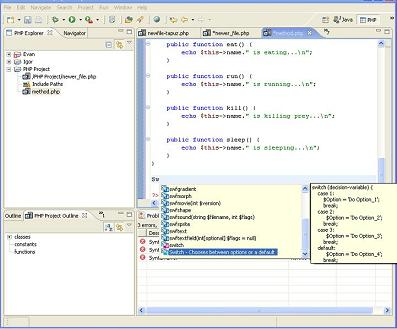
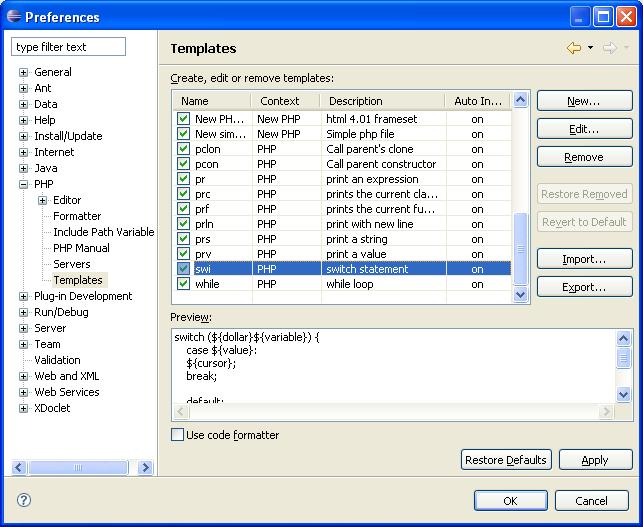
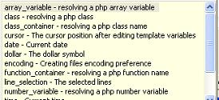
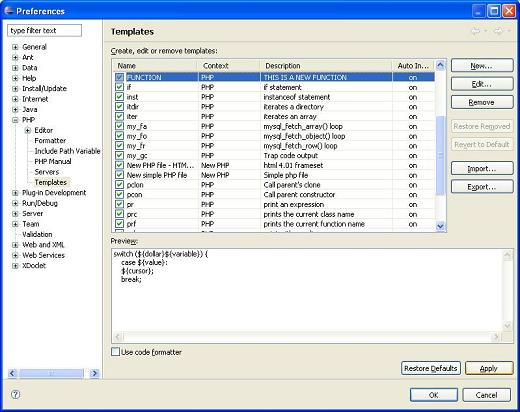

Templates are shortcuts used to insert a pre-defined framework of code. This code may be anything (e.g., the framework for a Do statement, class construction, While, etc.). The purpose is to save time and reduce the potential for errors in standard, repetitive code units. Once a template is inserted, you can complete the code quickly using manual and automated code entry methods.
A template must be defined in the Templates list (Windows | Preferences | Templates) in order to use it.
Templates are context sensitive: HTML, PHP, PHPDOC, JavaScript or CSS. The context of the current code defines which templates are available and which are not. For example, PHP templates are not available if your current code is Java, etc.
Place your cursor at the desired insertion point.
Enter a character string (e.g. “Sw”). Click CTRL+SPACE. A drop down list will open (PHP only) listing all available templates and completion options that begin with that combination of keys.

Figure: 1 - Inserting Template into Code
Templates are marked in the code completion list with a blue square.
Select a template from the list, or double click. You can navigate from variable to variable within the added code.
Click Windows | Preferences | Templates. The Templates dialog will open.

Figure: 2 - Templates
Press New. The New Template dialog opens.
Figure: 3 - New Template
Enter the template’s details:
|
Name |
A short name to identify the template (e.g. a template for a while loop may be called while). |
|
Context |
The template’s code context (i.e., PHP, PHPDoc or HTML). |
|
Description |
A short description of the template’s code. |
|
Pattern |
The pattern is the actual code that will be inserted into the editor whenever this template is selected. The string of words in the Pattern is the string that will be inserted when you enter a template. |
|
Insert Variable |
Displays a list of commonly used variables. You may add one (or more) into the pattern. |
You can add the variables to the pattern, from the list of variables shown by pressing the "Insert Variable" button (or by entering the '$' to the pattern).

Figure: 3 - Insert Variable
Every variable has a name and a short description. The variable will be inserted into the pattern at the cursor location. The list of variables is:
Create the Pattern required (text and variables).
Click OK to save the new template (or Cancel to exit without saving). The new template name will appear in the Templates list. It can be edited at any time.
Note: "OK" is enabled only after the Template has been given a name.

Figure: 4 - New Template Added to Template List